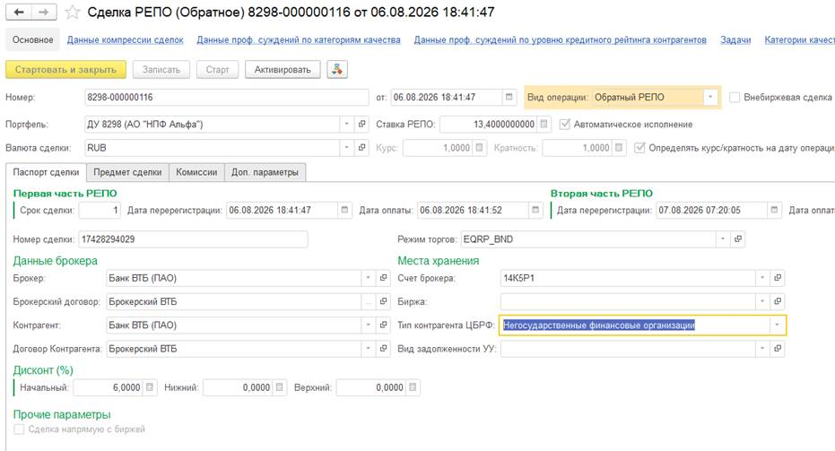
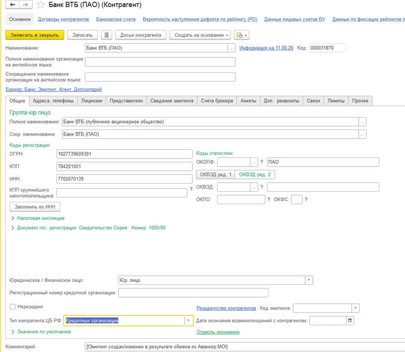

Пользователь просит пояснить, откуда заполняется поле «Тип контрагента ЦБ РФ» в сделках РЕПО.
Наблюдение:
| Реквизит | Значение на скриншоте | Комментарий |
|---|---|---|
| Вид / номер | Сделка РЕПО (Обратное), 8298-000000116 | Дата 06.08.2026 |
| Портфель | ДУ 8298 (АО «НПФ Альфа») | Ключ к разгадке: клиент портфеля — НПФ |
| Контрагент / Брокер | Банк ВТБ (ПАО) | Именно эту карточку пользователь открывал для сверки |
| Счет брокера | 14K5P1 | |
| Тип контрагента ЦБ РФ | Негосударственные финансовые организации | Не совпадает с типом ВТБ |
| Режим торгов | EQRP_BND | Биржевой режим; галка «Внебиржевая сделка» не стоит |
| Ставка РЕПО | 13.40 | Валюта RUB |
| Реквизит | Значение на скриншоте |
|---|---|
| Код | 000031870 |
| ИНН / КПП / ОГРН | 7702010139 / 784201001 / 1027739609391 |
| Юр./физ. лицо | Юр. лицо (нерезидент — нет) |
| Тип контрагента ЦБ РФ | Кредитные организации |


Если бы система всегда копировала тип из карточки контрагента сделки, в РЕПО должно было бы стоять Кредитные организации. Но стоит Негосударственные финансовые организации. Значит, источник заполнения — не карточка ВТБ.
Портфель сделки — ДУ 8298 (АО «НПФ Альфа»). НПФ — это типичная негосударственная финансовая организация. Тип в сделке совпадает именно с ожидаемым типом клиента ДУ, а не брокера.
Для портфелей доверительного управления в учётной политике / параметрах портфеля есть специальный флаг:
Определять тип контрагента по РЕПО от клиента ДУ
Когда флаг включён:
Если флаг выключен, тип берётся как обычно — из контрагента сделки (ВТБ → «Кредитные организации»).
Поэтому система умеет «переключить» источник типа именно для РЕПО по ДУ.
СчетаЕПСПроставитьВСделкеРЕПО).ОбновитьТипКонтрагента) и при подборе символов ОФР.СчетаЕПСПроставитьВСделкеРЕПО
(флаг ИспользуетсяПриЗагрузке = true).
Именно здесь заполняется ТипКонтрагентаЦБРФ.
ЕПС = Истина или НУ_ЕПС = Истина.
Без этого ветка с типом ЦБ РФ не выполняется.
| Проверка в коде | Результат в примере | Что сделала система |
|---|---|---|
Если Объект.ЕПС или Объект.НУ_ЕПС |
Сработало (учёт ЕПС по портфелю ДУ) | Вошли в блок заполнения типа |
Кандидат по умолчанию = Объект.Контрагент |
Банк ВТБ (ПАО) | Пока кандидат — ВТБ |
Параметр портфеляОпределятьТипКонтрагентаПоРепоОтКлиентаДУ = Истина? |
Да, сработало | Кандидата заменили на Портфель.Клиент = АО «НПФ Альфа» |
Читаем кандидат.ТипКонтрагентаЦБРФ |
У НПФ Альфа: «Негосударственные финансовые организации» | Это значение записали в сделку ФИН |
| Тип заполнен? Иначе ошибка загрузки | Заполнен | Загрузка прошла без отказа |
СчетаЕПСПроставитьВСделкеРЕПО →
из-за параметра портфеля взял тип у клиента ДУ (НПФ Альфа), а не у ВТБ.
ТипКонтрагентаЦБРФ — это снимок типа на момент заполнения,
а не «живая» ссылка на карточку контрагента формы.
Система сначала выбирает, у какого элемента справочника «Контрагенты» читать тип
(контрагент сделки или клиент портфеля), и только потом копирует его
ТипКонтрагентаЦБРФ в сделку.
Зачем: на форме РЕПО в поле «Контрагент» часто стоит брокер (ВТБ), но для учёта ЕПС/ОФР по портфелям ДУ нужен тип клиента ДУ. Параметр портфеля включает этот особый режим.
| Место | Когда срабатывает | Что делает |
|---|---|---|
| Правила обмена ДУ → ФИН, алгоритм СчетаЕПСПроставитьВСделкеРЕПО |
При загрузке сделки из ДУ (основной путь для вашего примера) |
Перезаполняет тип в ФИН по параметру портфеля |
БП СделкиРЕПО, форма,процедура ОбновитьТипКонтрагента() |
Если пользователь в ФИН меняет портфель / дату / контрагента | Тот же расчёт типа на форме |
Модуль менеджера СделкиРЕПО(подбор символов ОФР) |
При расчётах / проводках | Читает уже записанный тип сделки; если пусто — снова определяет источник по тому же параметру |
ПортфельПриИзменении / ДатаПриИзменении → ИзмененПортфель()).
После смены портфеля тип пересчитывается, потому что параметр и клиент портфеля могли измениться.
КонтрпартнерПриИзменении → ОбновитьТипКонтрагента()).
Если параметр выключен — тип обновится с нового контрагента;
если включён — останется тип клиента портфеля (смена ВТБ на другого брокера тип не сменит).
КонтрагентДляТипКонтрагентаЦБРФ = Объект.Контрагент
(в примере — Банк ВТБ).
ОпределятьТипКонтрагентаПоРепоОтКлиентаДУ.
Портфель.Клиент (в примере — АО «НПФ Альфа»).
Если параметр = Ложь / не задан → оставляем контрагента сделки (ВТБ).
Объект.ТипКонтрагентаЦБРФ = кандидат.ТипКонтрагентаЦБРФ.
| Шаг алгоритма | Значение в примере |
|---|---|
| A. Контрагент сделки | Банк ВТБ (ПАО) → тип «Кредитные организации» |
| B–C. Параметр портфеля ДУ 8298 | Сработал режим «от клиента ДУ» → кандидат = НПФ Альфа |
| D. Результат в сделке | Негосударственные финансовые организации |
// При смене портфеля / даты Процедура ИзмененПортфель() // ... заполнение видов учета по портфелю ... ОбновитьТипКонтрагента(); КонецПроцедуры // При смене контрагента Процедура КонтрпартнерПриИзмененииНаСервере() ОбновитьТипКонтрагента(); КонецПроцедуры Процедура ОбновитьТипКонтрагента() КонтрагентДляТипКонтрагентаЦБРФ = Объект.Контрагент; Если УправлениеПараметрамиПортфеля.ЗначениеПараметраПортфеля( Объект.Портфель, ПланыВидовХарактеристик.ПараметрыПортфеля.ОпределятьТипКонтрагентаПоРепоОтКлиентаДУ, Объект.Дата) = Истина Тогда КонтрагентДляТипКонтрагентаЦБРФ = ОбщегоНазначения.ЗначениеРеквизитаОбъекта(Объект.Портфель, "Клиент"); КонецЕсли; Объект.ТипКонтрагентаЦБРФ = ОбщегоНазначения.ЗначениеРеквизитаОбъекта( КонтрагентДляТипКонтрагентаЦБРФ, "ТипКонтрагентаЦБРФ"); КонецПроцедуры
Алгоритм СчетаЕПСПроставитьВСделкеРЕПО выполняется при загрузке.
Сначала проверяется ЕПС или НУ_ЕПС, затем — параметр портфеля,
затем тип записывается в объект ФИН. Если тип у кандидата пустой — загрузка падает с ошибкой (отказ).
Если Объект.ЕПС или Объект.НУ_ЕПС Тогда КонтрагентДляТипКонтрагентаЦБРФ = Объект.Контрагент; Если ...ОпределятьТипКонтрагентаПоРепоОтКлиентаДУ... = Истина Тогда КонтрагентДляТипКонтрагентаЦБРФ = ...Портфель.Клиент...; КонецЕсли; Объект.ТипКонтрагентаЦБРФ = ...кандидат.ТипКонтрагентаЦБРФ...; Если НЕ ЗначениеЗаполнено(Объект.ТипКонтрагентаЦБРФ) Тогда // ошибка загрузки, Отказ = Истина КонецЕсли; КонецЕсли;
| Условие | Откуда берётся «Тип контрагента ЦБ РФ» | Что было бы в примере |
|---|---|---|
| Параметр портфеля выключен | Из контрагента сделки (Банк ВТБ) | Кредитные организации |
| Параметр портфеля включён (типично для ДУ) | Из клиента портфеля (НПФ Альфа) | Негосударственные финансовые организации |